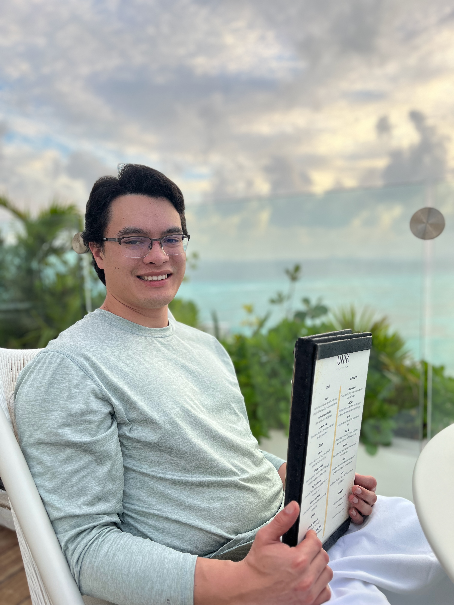

Tyler Fetterman

Objective Statement
Seeking an entry-level position as a web developer where
I can apply my foundational skills in HTML, CSS, and
JavaScript to contribute to dynamic and engaging web
projects while furthering my knowledge and expertise
in the field.
Work Experience
Xtant Medical
June 2022 - Current
- Debride, process, and package biological tissue
Plumbing Apprentice at Mullin Inc.
Jan. 2022 - May 2022
- Worked with power tools
- Fit and maintained water and gas systems in residential and commerical properties
Handyman at Connect Property Management
June 2018 - Dec. 2021
- Worked on tough and odd jobs that other employees didn't want
- Diverse job ranged from painting houses to maintaining network security
- Required adaptable skills
Package Handler at FedEx
Dec. 2020 - Jan. 2021
- Fast paced package handling
- Aided new employees in understanding the organized system for package placement in the trucks
Caregiver at Credence Homecare
July 2020 - Aug. 2020
- Required me to be meticulous as I needed to notice any changes in my client and their mental state
- Responsible for cleaning client's living space, takeing dogs on walks, filling out tedious paperwork, and preparing meals
Landscaper at Bearpaw Landscaping
June 2019 - Aug. 2019
- Scuplted the landscape for the company's front entrance independently
Dishwasher at The Wok in Belgrade
June 2018 - Aug. 2018
- Cleaned the kitchen
- Prepared the rice
- Fastest employee to wash dishes
Education
Montana State University - Billings
Sept. 2023 - Dec. 2023
- Associate's degree, Criminal Justice
Montana State University - Bozeman
Aug. 2020 - Dec. 2022
- Bachelor's degree, Wildlife, Fish and Wildlands Science and Management
Skills
- HTML
- CSS
- JavaScript